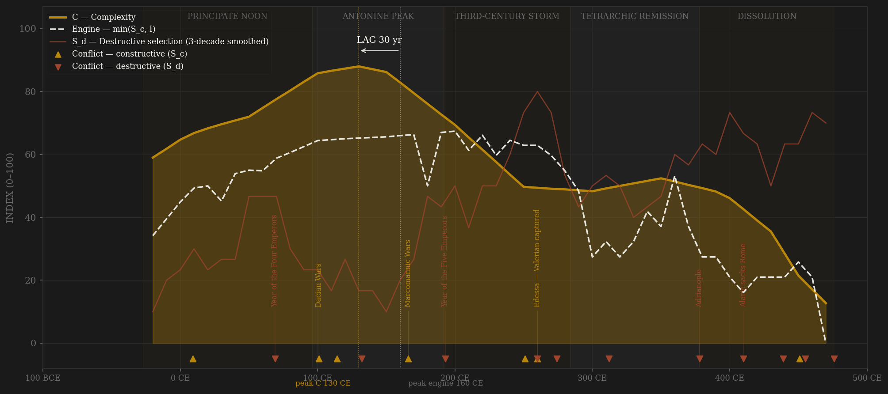
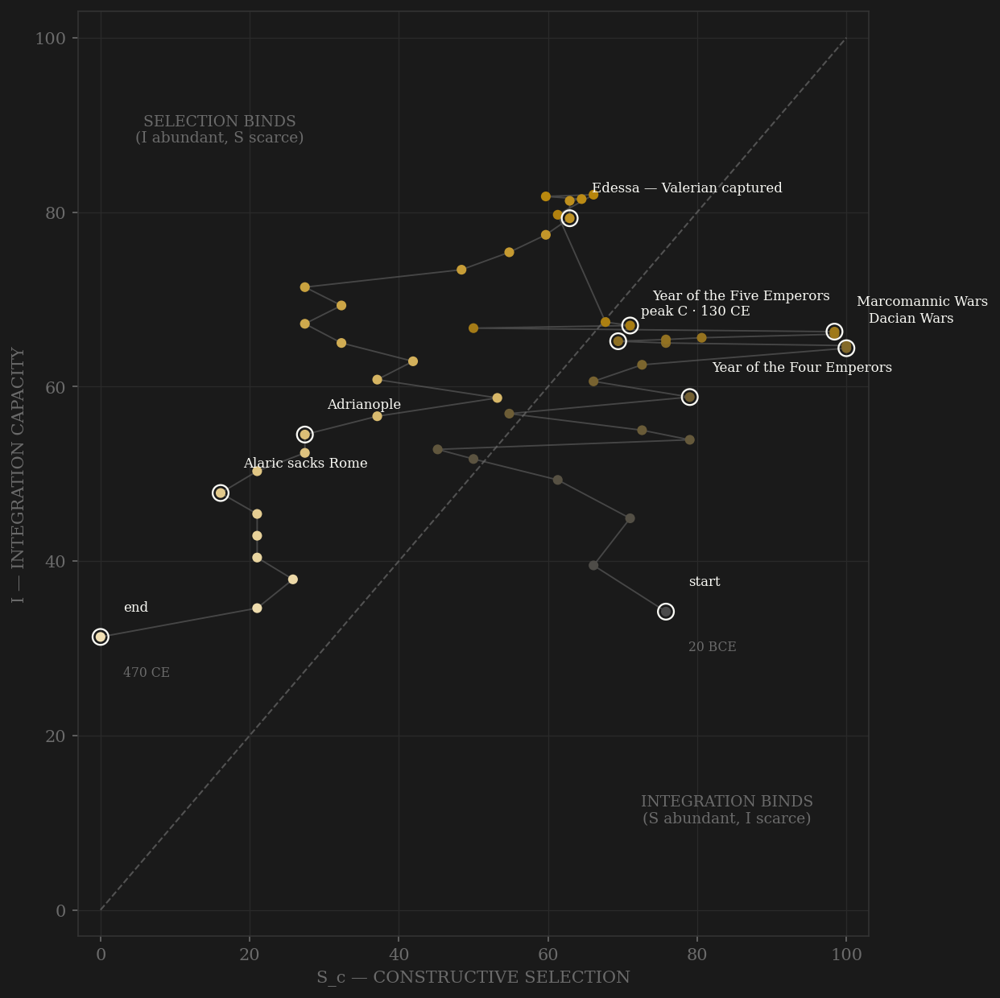

The Empire opens rich: complexity enters at 59 on its own within-polity scale, because the stock was built by somebody else — under the split, the Republican engine is cross-polity and no longer counts. Output climbs on the inheritance for a century and a half, peaking in the Hadrianic 130s: the jurists, the urban maximum, the Pantheon. The Empire's own engine peaks in the 160s — Marcus' Parthian and Marcomannic wars pressing on a ladder still wide open (provincial senators near half the house, Pertinax climbing from a freedman's son toward the purple) and integration near its top. That is thirty years AFTER peak output: lag −30, FAIL, under the v2 definition — and −120 under war-only v1. The direction itself is the finding. An annuity regime consumes complexity it did not generate; there is no reason its engine should precede its output, and it doesn't. The third century calls the loan: S_d spikes to maximum in the 260s with the empire in three pieces, and the denarius — the lab-measured entropy series — collapses from 75% silver under Marcus to 2.5% under Gallienus. Diocletian's remission buys a century at the price of the ladder itself: occupations frozen by statute, sons bound to fathers' stations — channel A legislated shut. After Adrianople the arc is a controlled dissolution, the annuity spent.

The trajectory enters mid-plot, not at a wall: contest still reads high in the Augustan decades because the equestrian ladder and the provincial-entry waves are real selection even as electoral politics dies. The path rides the top of the plot through the second century — the Trajanic-Antonine plateau, contest and integration both above 60, the only sustained both-high stretch in either Roman frame — then turns down the selection axis as the Severan camp-ladder narrows to the army alone. Integration peaks at 220, just after Caracalla makes every free inhabitant a citizen: the trajectory finds the Constitutio Antoniniana on its own, the state maximizing connection while its selection is already failing. From there the path does what the unified view could not show: it falls down BOTH axes at once. The unified Rome trajectory died pinned against the S = 0 wall at half integration; the Empire in its own frame dies sliding toward the origin — contest extinguished by the 400s, integration collapsing behind it as the roads decay and the West's tax-spine is cut at Carthage. A polity that ends near the origin is not a machine that lost one input; it is a machine being dismantled.
Each conflict is coded by locus and target, never by outcome. Frontier war against peer polities — Parthia, the Marcomanni, Sasanian Persia, the Goths beyond the Danube — is constructive (S_c) even when it kills an emperor: Abritus 251 and Edessa 260 are field catastrophes at the edge, machinery untouched at the core. Usurper wars, succession auctions, provincial revolts, and Aurelian's reconquest of the Gallic and Palmyrene secessions are S_d — Roman armies on both sides, the coordination machinery itself the battlefield. Invasions that penetrate the core flip to S_d by the Adrianople rule: the eastern field army destroyed inside the empire 378, Alaric 410, the Vandals at Carthage 439 and Rome 455. Catalaunian Fields 451 stays S_c by the Hannibal rule — Aetius' coalition machinery demonstrably functioned. The war-only v1 series shows why the cleaning matters: it puts peak selection at 250, reading the century's emergency as its discipline.
| YEAR | CONFLICT | CODE | CODING RATIONALE |
|---|---|---|---|
| 9 CE | Teutoburg Forest | Sc | Three legions destroyed AT the frontier — expansion checked, core untouched: B by locus despite the disaster |
| 69 CE | Year of the Four Emperors | Sd | The armies discover the secret of empire and auction it — Cremona sacked twice, the Capitol burned in street-fighting |
| 101 CE | Dacian Wars | Sc | Sarmizegetusa razed, Dacia annexed — the century's great external conquest under the first provincial emperor |
| 114 CE | Trajan's Parthian War | Sc | Ctesiphon taken, Mesopotamia briefly annexed — peer rivalry at maximum reach |
| 132 CE | Bar Kokhba revolt | Sd | Judaea's provincial society erased — internal locus, catastrophic |
| 166 CE | Marcomannic Wars | Sc | The Danube coalition war to 180 — peak peer pressure on a still-open ladder: the Empire's own engine peak sits in this decade |
| 193 CE | Year of the Five Emperors | Sd | The Praetorians sell the throne to Didius Julianus; Severus takes it at Lugdunum — the largest Roman-on-Roman battle |
| 251 CE | Abritus | Sc | The emperor Decius killed by the Goths in the field — frontier locus, B despite the dead emperor |
| 260 CE | Edessa — Valerian captured | Sc | The frontier catastrophe of the century: an emperor taken alive by Shapur — still B by locus, a field defeat at the edge |
| 260 CE | Gallic & Palmyrene secessions | Sd | The empire splits in three — usurper wars everywhere; S_d at its maximum (separate ledger row, one arc annotation — shares the year with Edessa) |
| 274 CE | Aurelian's reconquest | Sd | Gaul and Palmyra retaken — Roman armies on both sides: reunification by civil war is still civil war by locus |
| 312 CE | Milvian Bridge | Sd | Constantine's civil wars — unity restored by internal war, again |
| 378 CE | Adrianople | Sd | External origin, core penetration: the eastern field army and the emperor destroyed INSIDE the empire — the type-case of the rule |
| 410 CE | Alaric sacks Rome | Sd | Core penetration; two years after the state executed its own generalissimo and pogromed its federate soldiers' families |
| 439 CE | Vandals take Carthage | Sd | The West's tax-spine amputated — external origin, core fiscal locus |
| 451 CE | Catalaunian Fields | Sc | Aetius' Romano-Gothic coalition stops Attila — Hannibal rule: the machinery demonstrably functioned, once more |
| 455 CE | Vandal sack of Rome | Sd | Fourteen days; the empress carried to Carthage — the annuity exhausted |
| 476 CE | Odoacer deposes Romulus | Sd | The regalia shipped east — the polity formally self-liquidates |
| COMPONENT | GRADE | BASIS |
|---|---|---|
| S_c v2 — A · elite-entry (0.40) | ○ scholar-coded | Equestrian career ladder (Talbert 1984; Millar), provincial senatorial entry as incorporation waves — Gauls under Claudius (Lyon tablet 48), Spaniards under Trajan, Africans/Syrians under the Severans (Hopkins 1983) — army route to elite (Campbell 2005; de Blois 2002); decays via 3rd-c. hereditization and the Diocletian-Constantine frozen occupations (Jones 1964). novi homines % NOT used: its imperial values are barrack-emperor usurpation — the S_d channel wearing A's clothes (unified build's exclusion, upheld) |
| S_c v2 — B · external rivalry (0.30 hard cap) | ○ scholar-coded | Locus-cleaned frontier-war ordinal: Parthian/Marcomannic/Persian/Gothic frontier = B (Teutoburg, Abritus, Edessa included — field defeats at the edge); usurper wars, secessions and reconquests = S_d, excluded; Adrianople/Alaric/Vandals = S_d core penetration. Campbell 2005; de Blois 2002; Heather 2006 |
| S_c v2 — C · within-rules contest (0.30) | ○ scholar-coded | Senate–emperor bargaining (Talbert 1984), elections transferred to the Senate 14 CE, municipal magistracy competition, legal development as institutional contest (the jurists, the rescript system); ~0 once the consistory replaces contest |
| S_d — Destructive selection | ○ scholar-coded | Per-decade 0–10 ordinal by locus and target: succession wars, purges, provincial revolts, the 3rd-c. usurper storm, core-penetrating invasions — coding_ledger_v2.csv |
| I — Integration | ◐ proxy series | Road km (Laurence 1999), citizenship % (Mouritsen 1998 — saturates at the Constitutio Antoniniana 212), Mediterranean shipwrecks (Parker 1992 / Wilson 2011), social mobility (Hopkins 1983) — re-normalized within polity; peaks 220 CE |
| C — Complexity | ◐ proxy series | Literary / legal / monumental indices (OCD; Conte 1994), urbanization (Wilson 2011; Hanson 2016), GDP per capita (Maddison 2007; Scheidel & Friesen 2009) |
| E — Entropy | ● lab-measured | Silver content of the denarius/antoninianus/nummus, 60 assayed points (Butcher & Ponting 2014; Walker; Harl 1996): 98% under Augustus, 2.5% under Gallienus — the fiscal collapse measured at the bench; the 290s dip is Diocletian's argenteus reform |
SPLIT VIEW: Rome enters Campbell's roster as two constitutional regimes — roman_republic (509–27 BCE) and this page (27 BCE–476 CE) — per his dynasty-split rule; the unified rome page stays live as the continuity view. All 0–100 columns re-normalized within this polity, rebuilt from the unified build's component files, not sliced. Lag under BOTH S definitions (frozen protocol, 3-decade smoothing, engine = min(Sc,I)): v2 contestability −30 FAIL (engine 160s CE → C 130s CE); v1 external-war-only −120 FAIL (engine 250s → C 130s). Unsmoothed −70/−110, verdicts unchanged. Honest negative, and the theoretically expected one: the split resolves the unified page's +200 LONG by exposing it as a cross-regime lag — a Republican engine paying out under the Principate. The Empire, denied its inherited engine, shows no in-window lag of its own: an annuity regime's output precedes its best engine decade. The v1 peak at 250 is not locus contamination (channel B was cleaned row by row) — war-only S genuinely reads the Abritus–Edessa emergency as peak selection, which is the construct-validity failure the v2 amendment exists to fix. Binder at peak C is INTEGRATION by 4 points (Sc 69 vs I 65) — knife-edge, noted. Rebuild: scripts/build_rome_split_sicre.py, then scripts/polity_report.py --slug roman_empire